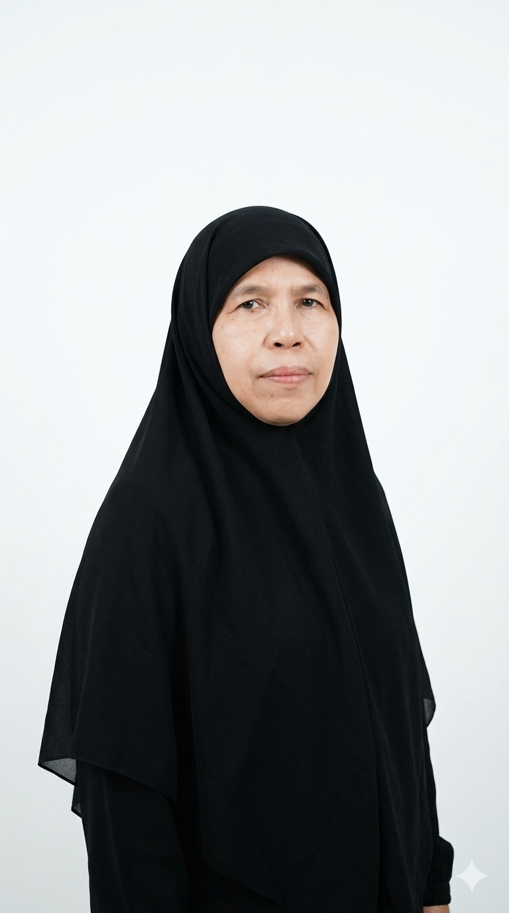

Lembaga Sertifikasi Profesi Fasilitator, Instruktur & Tenaga Kepelatihan
Berlisensi BNSP No. BNSP-LSP-444-ID
LSP FIT memiliki lisensi BNSP Nomor BNSP-LSP-444-ID dan berhak melakukan uji kompetensi yang mengacu pada SKKNI No. 333 Tahun 2020 untuk bidang fasilitator, instruktur, dan tenaga kepelatihan.

Tentang LSP FIT
Profil Singkat LSP FIT
Lisensi BNSP Resmi
LSP FIT berlisensi Badan Nasional Sertifikasi Profesi dengan Nomor BNSP-LSP-444-ID.
Dukungan Asosiasi
Didukung APTISI Wilayah 3 DKI Jaya dan AFIN (Asosiasi Fasilitator Instruktur Nusantara).
Acuan SKKNI
Pelaksanaan skema dan asesmen mengacu pada Standar Kompetensi Kerja Nasional Indonesia No. 333 Tahun 2020.
Skema Preview
Pilih Kategori Sertifikasi
Detail lengkap unit kompetensi tersedia pada halaman Skema.
Klaster
Sertifikasi kompetensi berbasis klaster kerja untuk perencanaan dan pelaksanaan pembelajaran.
Lihat DetailInstruktur
Skema okupasi instruktur dari level operasional hingga senior untuk kebutuhan lembaga dan industri.
Lihat DetailKepelatihan
Fokus pada pengelolaan program, administrasi, dan manajemen lembaga pelatihan berstandar.
Lihat DetailAlur Sertifikasi
7 Langkah Proses Uji Kompetensi
Langkah mudah untuk mendapatkan sertifikat kompetensi profesional dari BNSP melalui LSP FIT.
Pendaftaran
Mendaftar ke LSP FIT dan mengisi Form APL 1 & 2.
Verifikasi Dokumen
Dokumen diverifikasi, pemohon diterima sebagai asesi, lalu melakukan pembayaran.
Pra Asesmen
Asesi melakukan konsultasi pra asesmen.
Uji Kompetensi
Pelaksanaan proses asesmen oleh asesor kompetensi.
Rekomendasi Asesor
Asesor mencatat bukti asesmen dan membuat rekomendasi.
Rapat Pleno
Rapat pleno Komite Teknik untuk penetapan hasil.
Serah Terima
Sertifikat diserahkan kepada peserta yang dinyatakan kompeten.
Asesor
Tim Asesor Profesional

Agus Mustofa
Asesor Kompetensi BNSP

Aditya Yudha Suseno
Asesor Kompetensi BNSP

Anne Mariane
Asesor Kompetensi BNSP

Margono Sugeng
Asesor Kompetensi BNSP

Marthen C. D. Sipahuta
Asesor Kompetensi BNSP

Nelly Triyas Dayanti
Asesor Kompetensi BNSP

Nur Dewi Afifah
Asesor Kompetensi BNSP

Yulia Rosdiati
Asesor Kompetensi BNSP
Struktur Organisasi
Peran Inti Organisasi LSP FIT
Dewan Pengarah
Eva Rosmalia
Direktur

Bagian Sertifikasi
Rahayu Wibowo
Bagian Mutu
Fitri Firmansyah
Bagian Administrasi
Dewi Salsabila


Testimoni
Kesan Peserta Sertifikasi
Proses asesmen jelas, profesional, dan membantu saya meningkatkan kredibilitas sebagai instruktur.
Rani K.Trainer Korporat
Tim asesor sangat objektif, feedback-nya aplikatif untuk implementasi di kelas pelatihan.
Dimas A.Fasilitator SDM
Alur administrasi cepat dan komunikatif. Sangat cocok untuk kebutuhan sertifikasi profesional.
Maya P.Koordinator Pelatihan
Informasi Utama
Rujukan Dokumen LSP FIT

LSP FIT Berlisensi BNSP No. BNSP-LSP-444-ID
Pelaksanaan sertifikasi mengacu pada SKKNI No. 333 Tahun 2020 untuk bidang fasilitator, instruktur, dan tenaga kepelatihan.
Lihat Detail
30+ Skema: 4 Klaster, 18 Instruktur, 10 Kepelatihan
Skema okupasi dan klaster disusun per jenjang kualifikasi dengan rincian unit kompetensi pada katalog resmi.
Lihat Skema
Proses Sertifikasi 7 Tahap
Mulai pendaftaran, verifikasi, pra asesmen, asesmen, rekomendasi asesor, rapat pleno, hingga serah terima sertifikat.
Lihat InformasiSiap Mendapatkan Sertifikasi Kompetensi BNSP?
Daftarkan diri Anda sekarang dan pilih skema yang paling relevan dengan kebutuhan karier profesional Anda.